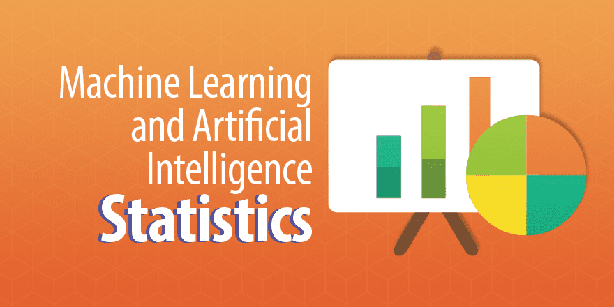
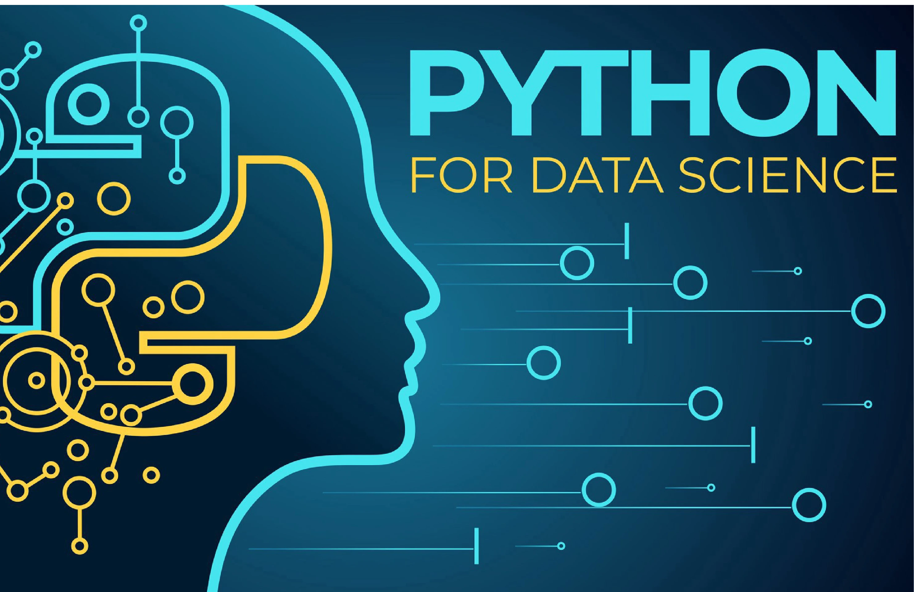
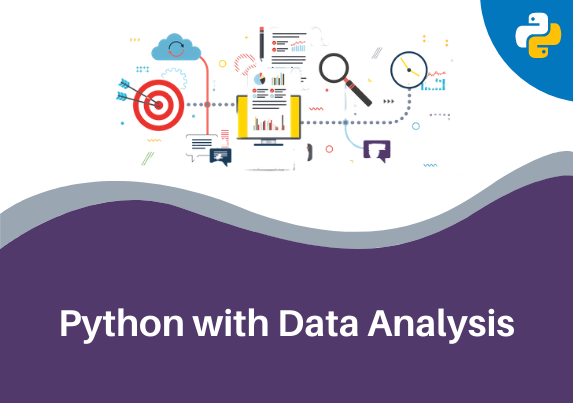

Data Science is a blend of various tools, algorithms, and machine learning principles with the goal to discover hidden patterns from the raw data. Data Scientist not only does the exploratory analysis to discover insights from it, but also uses various advanced machine learning algorithms to identify the occurrence of a particular event in the future. A Data Scientist will look at the data from many angles, sometimes angles not known earlier. Data Science is a more forward-looking approach, an exploratory way with the focus on analyzing the past or current data and predicting the future outcomes with the aim of making informed decisions. It answers the open-ended questions as to “what” and “how” events occur.
Data Science Workflow

A beginner's guide to start learning from scratch

STATISTICS
Mathematics is one the basic building block for the strong foundations of data science concepts.
Starting from vectors, determinants, matrices, mean mode, median, quantiles to linear algebra all these mathematics concepts are important to understand descriptive and inferential statistics.

PYTHON
There are two tools currently in the market namely R and Python to perform all execution of tasks and play with data.
Python is very beginner friendly and easy to learn. It is also very popular among data science communities and python offers enumerous functions which make it easy to derive insights from data.
